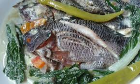

Ginataang Tilapia Recipe
Ginataang Tilapia

The Ginataang Tilapia is a creamy dish made from the milk of the coconut fruit
it is a delicious meal that is popular in the Bicol Region where recipes made out of coconut are common
The recipe for this dish would be listed below
- 2 cups of coconut milk
- 1/3 kg of Tilapia
- 4 clovers of garlic
- 1 medium size onion
- bundle of pechay (chinese cabbage)
- 2 pieces of sili
- 1 cup of water
- ginger
- salt and msg to taste
- in a pot, put the coconut milk, ginger, garlic, and onion. let it boil
- after it boils put the Tilapia and the stalk of the pechay
- after boil, put pechay leaves then add seasonings to taste
- lastly, add the sili
Now you have your ginataang tilapia, enjoy!